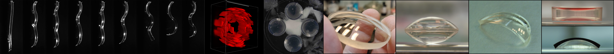
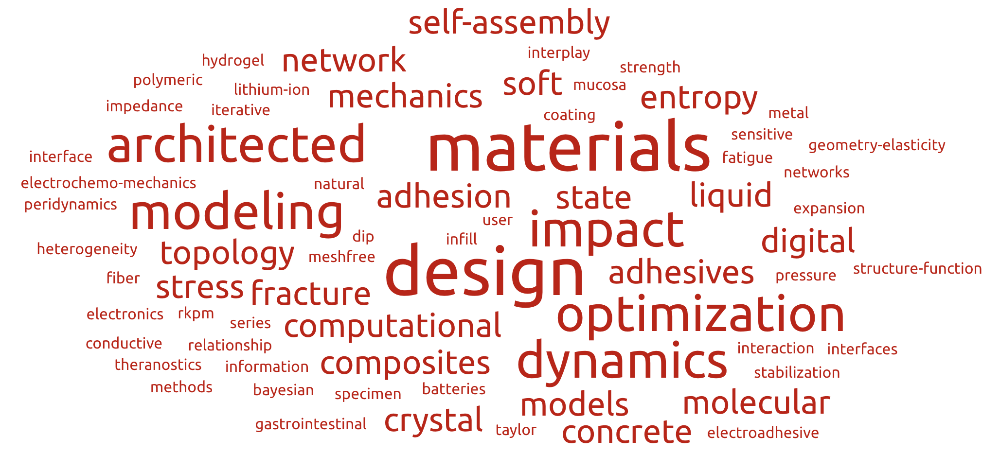

NEW.Mech is a one-day workshop that aims to bring together the
New England
Mechanics community to share the latest advancements in the field. As in past years, this workshop is completely free of charge. Prizes for best lightning talks from students and postdocs will be awarded!
Date: Friday May 24th, 2024
Time: 9:30am-3:30pm
Location: Room 906,
Photonics Center, 8 St Mary's St, Boston, MA, 02215
Keynote Speakers: Al Crosby,
Valeri Frumkin,
Abigail Plummer
Schedule:
9:30am-10:00am Breakfast & Registration
10:00am-10:10am Opening Remarks
10:10am-11:10am Al Crosby, University of Massachusetts Amherst, "Soft Matter Movement"
11:10am-12:00pm Lightning Talks — Session A
12:00pm-1:00pm Lunch
1:00pm-1:30pm Abigail Plummer, Boston University, "Obstructed Swelling and Fracture of Hydrogels"
1:30pm-2:00pm Valeri Frumkin, Boston University, "Fluidic Shaping of Optical Components"
2:00pm-2:50pm Lightning Talks — Session B
2:50pm Social, Closing Remarks, and Awards


Lightning Talks -- Session A:
1. Bastien Aymon, MIT, "Untangling the Mechanics of the Bowline Knot"
2. A B M Tahidul Haque, University of Massachusetts Amherst, "Liquid-metal composites as conductive adhesives for soft integrated electronics"
3. Sanika Barve, Boston University, "Mechanics of Head-Carrying Textile Rings"
4. Xin Hu, University of Massachusetts Amherst, "Stimuli-responsive Microfibers"
5. Gillian Schiffer, MIT, "Interactive infill topology optimization guided by user drawn patterns"
6. Elika Shams, University of Connecticut, "Analyzing a genetic mutation in the tropoelastin protein using atomic molecular dynamic simulation"
7. Binbin Ying, MIT, "e-GLUE: electroadhesive hydrogel interface for prolonged gastrointestinal mucosal theranostics"
8. Zumrat Usmanova, Northeastern University, "Interplay between geometric heterogeneity and elasticity in architected adhesion"
9. Hiba Kobeissi, Boston University, "Open-source software for the automated mechanical analysis of movies of engineered heart tissue"
10. Andrew Bagnoli, Brown University, "Finite Element Simulation and Design of Military Helmets"
11. Yichen Wan, Northeastern University, "Interfacial Fatigue Fracture of Pressure Sensitive Adhesives"
12. Peerasait (Jeffrey) Prachaseree, Boston University, "Structure-Property Relationships of Random Fiber Networks"
13. Max Kukkola, TU Delft & Brown University, "Fast Prediction of Cluster Interaction Tensors through Data-driven Surrogate Modeling"
14. Birendra Chaudhary, University of Rhode Island, "Multifunctional composite structures for shock load monitoring and immediate failure detection"
15. Yi Li, University of Connecticut, "Thermal-Gradient-Driven Heterogeneous Actuation of Liquid Crystal Elastomers"
Lightning Talks -- Session B:
16. Jihong Ma, University of Vermont, "Breakdown of Conventional Winding Number Calculation in One-Dimensional Lattices with Interactions Beyond Nearest Neighbors"
17. Gabriela Moreira Lana, UMass Amherst, "Seam Patterning for Adaptive Mechanics in Soft Composite Joints"
18. Somayajulu Dhulipala, MIT, "Curvature guided design and scalable manufacturing of Spinodal metamaterials"
19. Royal Ihuaenyi, Northeastern University, "Seeking the Most Informative Design of Test Specimens for Learning Constitutive Models"
20. Siyuan Song, Brown University, "Orientation Localization of Host-Patch Nanocrystals in Self-Assembled Superlattices"
21. Yu-Bai Xiao, University of Connecticut, "The direct influence on mechanical properties of tropocollagen by AGE adducts"
22. Lin Cheng, Worcester Polytechnic Institute, "Scientific Artificial Intelligence (Sci-AI) for structure-properties modeling for composite materials"
23. Tyler Chu, University of Rhode Island, "Dynamic Response of Drop-Stitch Inflatables to Projectile Impact"
24. Ruqing Fang, Northeastern University, "Mechano-electrochemical Impedance Spectroscopy (MeIS)""
25. Shu Wang, MIT, "A Loop-Opening Model for the Intrinsic Fracture Energy of Polymer Networks"
26. Shunyu Yin, Brown university, "Enhancing Photonic Crystal Design through Machine Learning: A Breakthrough in Nanofabrication Technology"
27. Samuel Figueroa, MIT, "Tunable Mechanical Response in Architected Microgranular Materials"
28. Jackson Jewett, MIT, "A topology optimization framework for reinforced concrete design"
29. Jiarui Wang, Brown University, "Taylor series expansion for meshfree methods in computational solid mechanics"
Sign-Up: Email Emma Lejeune for info on late signup (after May 10th)
Submit a Lightning Talk: submission closed (deadline: May 6th)
Questions? Contact
Emma Lejeune